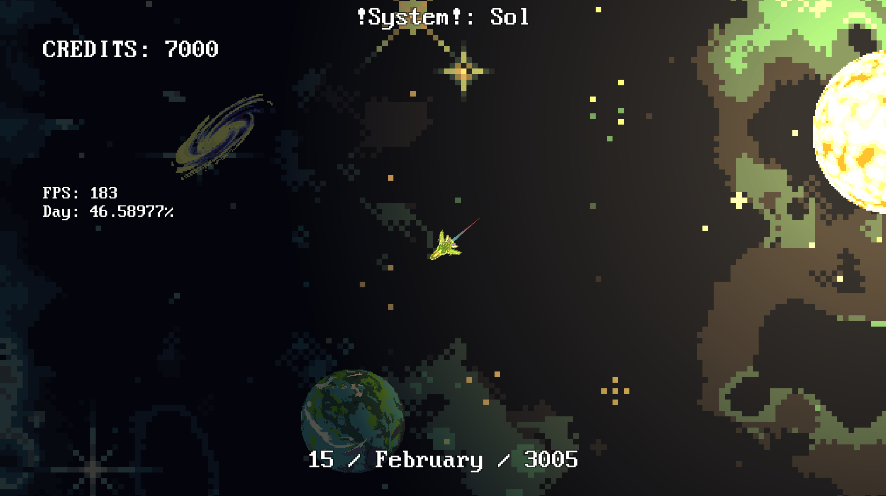
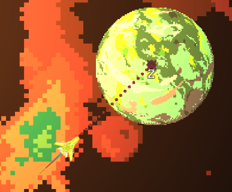
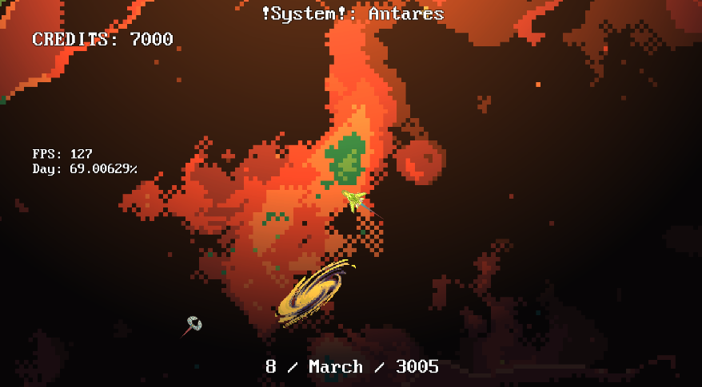
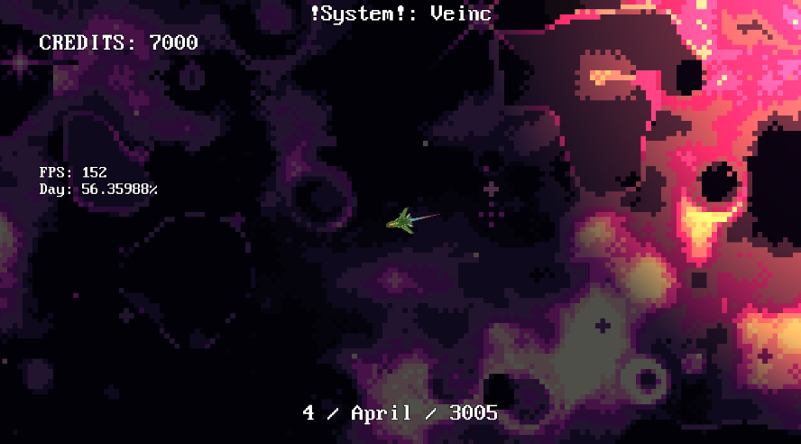
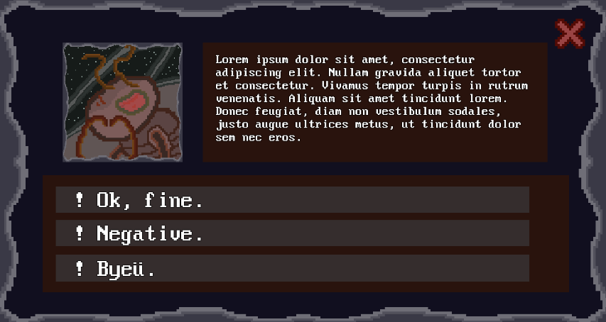
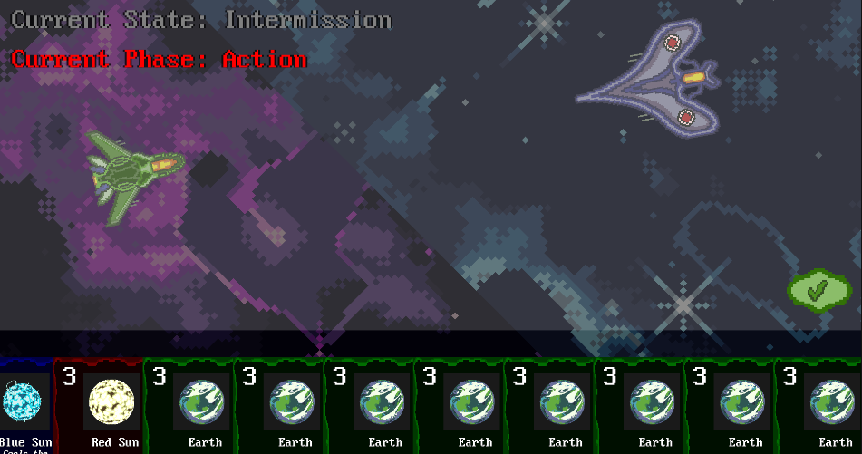

SRN
Brief summary of the game's current state
SRN is a prototype game inspired from the game Space Rangers and it's been a playground for me to learn and explore Unity.
It is an RPG game where you can stop time to plan your actions by pressing "Spacebar" and proceed by doing the same.
You start the game by choosing a spaceship. There are other planets you can go by double clicking and sell or buy items. Items are for to increase your stats like speed and durability, or just selling them.
There are other space systems to go by double clicking. Every system has their own set of planets and spaceships (NPCs). The game remembers planet and NPC locations by calculating their movements in the background.
Since the game is an RPG, I wanted to put some dialogue options with the NPCs depending on their AI.
I prepared some portraits for the NPCs and prepared prototypes of dialogue options but they still need some work.
For the combat, I wanted to create a card game system. I thought it suited the exploration aspect of the game. Also it has a potential to add more depth into the items. The Card game is however, in progress.
